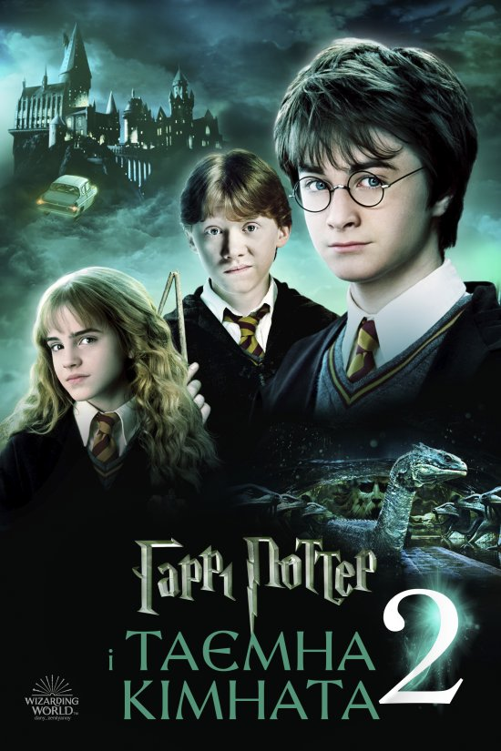

Одним із моїх улюблених фільмів є «Гаррі Поттер і філософський камінь». Це захопливий фантастичний фільм, який розповідає про пригоди хлопчика-чарівника Гаррі Поттера, його друзів та навчання у школі магії Гоґвортс.

Детальніше про фільм можна прочитати на Вікіпедії .